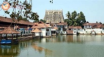
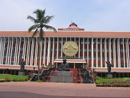
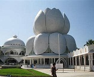

Located in the southwestern tip of India, Thiruvananthapuram is bound by the Arabian Sea in the west and Tamil Nadu in the east. Named after Anantha Padmanabha or Lord Vishnu, the city is home to many ancient temples. But the landmark is the Sree Padmanabha Swamy Temple around which the city has been built on seven low hills. The wooded highlands of the Western Ghats in the eastern and northeastern borders give Thiruvananthapuram some of the most enchanting picnic spots. A long shoreline with internationally renowned beaches, historic monuments, backwater stretches and a rich cultural heritage make this district a much sought-after tourist destination. Clean and green, Thiruvananthapuram, the capital of Kerala is one of the most beautiful cities in the country.
  